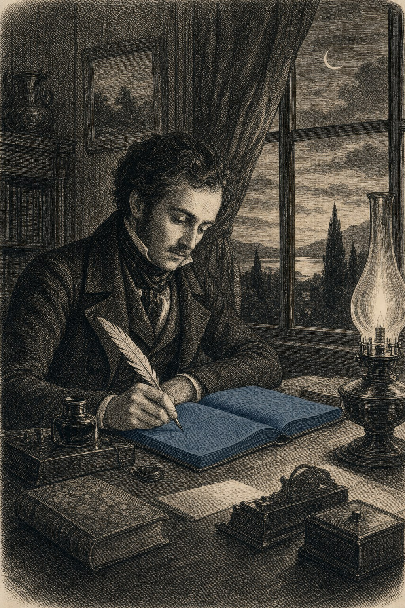

Letter to the reader
Edition 5 delivers no opinion but an instrument.
Foreword · 4 min read

This edition is different from the previous four.
Editions 1, 2, 3 and 4 described what I saw around me. Edition 5 delivers something else: an instrument. By the time you reach the end of this paper, you will be holding something with which you can assess any headline from your week. No opinion, no agenda, no membership — a tool you can use the way a steel construction engineer uses his calculator.
The tool is old. It comes from the factories of Japan, from the drawing offices of Dutch engineers in the nineteen-fifties, and from the criminology of the twentieth century. Three traditions saying the same thing: reality is hierarchically distributed, and whoever treats it as flat will lose it. Whoever weighs everything equally, weighs nothing. Whoever fails to distinguish the first order from the third will steer his society by a factor that barely registers in the actual outcome.
That sounds theoretical. In this edition I show that it is concrete. Three dossiers — methane, nitrogen, policy — in which the Dutch press and Dutch government have systematically elevated second- and third-order factors to the first. And three people — a lawyer, a judge, a civil servant — who, in a world with its order inverted, nonetheless kept the first order in view, and paid dearly for it, or received recognition far too late.
Edition 5 is therefore diagnostic. Not descriptive, as the preceding editions were, but a tool. Read it accordingly — not to be informed, but to learn how to look.
That is all I can offer you. What you do with it afterwards — over the morning paper on the table — is your own work.
Jacobus van Merksteijn Calvià, July 2026
This edition is different from the previous four.
Editions 1, 2, 3 and 4 described what I saw around me. Edition 5 delivers something else: an instrument. By the time you reach the end of this paper, you will be holding something with which you can assess any headline from your week. No opinion, no agenda, no membership — a tool you can use the way a steel construction engineer uses his calculator.
The tool is old. It comes from the factories of Japan, from the drawing offices of Dutch engineers in the nineteen-fifties, and from the criminology of the twentieth century. Three traditions saying the same thing: reality is hierarchically distributed, and whoever treats it as flat will lose it. Whoever weighs everything equally, weighs nothing. Whoever fails to distinguish the first order from the third will steer his society by a factor that barely registers in the actual outcome.
That sounds theoretical. In this edition I show that it is concrete. Three dossiers — methane, nitrogen, policy — in which the Dutch press and Dutch government have systematically elevated second- and third-order factors to the first. And three people — a lawyer, a judge, a civil servant — who, in a world with its order inverted, nonetheless kept the first order in view, and paid dearly for it, or received recognition far too late.
Edition 5 is therefore diagnostic. Not descriptive, as the preceding editions were, but a tool. Read it accordingly — not to be informed, but to learn how to look.
That is all I can offer you. What you do with it afterwards — over the morning paper on the table — is your own work.
Jacobus van Merksteijn Calvià, July 2026